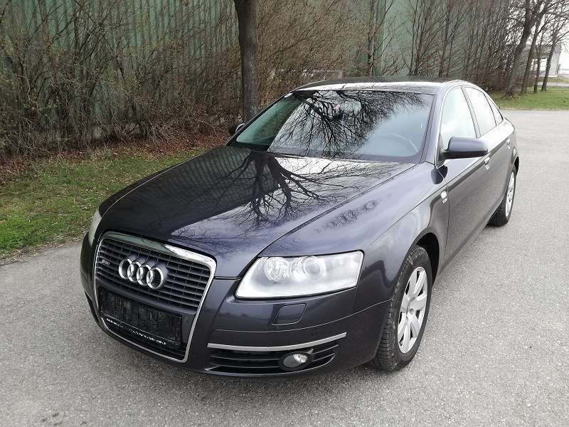
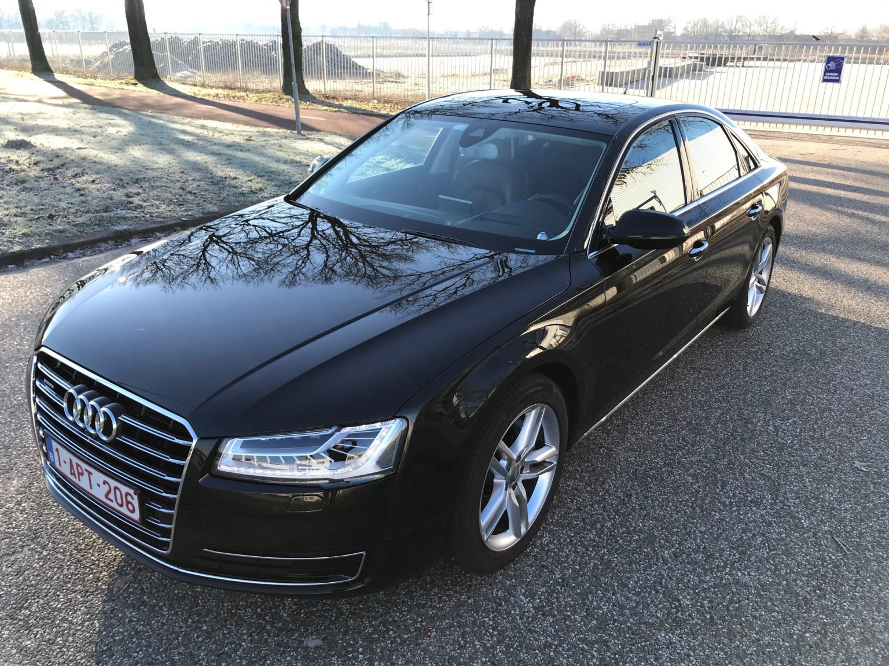

Limosine
Eine Limousine ist ein Fahrzeugtyp mit einer geschlossenen Karosserie, einem separaten Fahrgastraum und einem separaten Kofferraum. Sie bietet Platz für mehrere Passagiere und ist für den Transport von Personen konzipiert. Der Begriff "Limousine" wird in der Automobilindustrie verwendet, um eine spezifische Fahrzeugkategorie zu beschreiben, die durch ihre Bauform gekennzeichnet ist. Limousinen haben in der Regel vier Türen und bieten Sitzplätze für vier bis fünf Passagiere. Sie zeichnen sich durch eine abgeschrägte Dachlinie und eine niedrigere Gesamthöhe im Vergleich zu anderen Fahrzeugtypen wie SUVs oder Kombis aus. Limousinen können in verschiedenen Größen und Ausstattungsvarianten erhältlich sein. Sie können von kompakten Limousinen bis hin zu luxuriösen Oberklasse-Fahrzeugen reichen. Limousinen bieten oft einen hohen Komfort, eine gute Fahrzeugdynamik und sind mit verschiedenen Annehmlichkeiten und Technologien ausgestattet, um das Fahrerlebnis angenehm zu gestalten.
| A3 | A6 | A8 |
|---|---|---|
 |
 |  |
| 16.000 Euro, kleine Limosine, 190 PS, 280 NM, 4 Sitze, 5 Türen, mit Winterrädern, 60.000 KM gelaufen |
22.000 Euro, mitlere Limosine, 200 PS, 300 NM, 4 Sitze, 5 Türen, mit Winterrädern, 90.000 KM gelaufen |
32.000 Euro, große Limosine, 250 PS, 300 NM, 4 Sitze, 5 Türen, mit Winterrädern, 30.000 KM gelaufen |